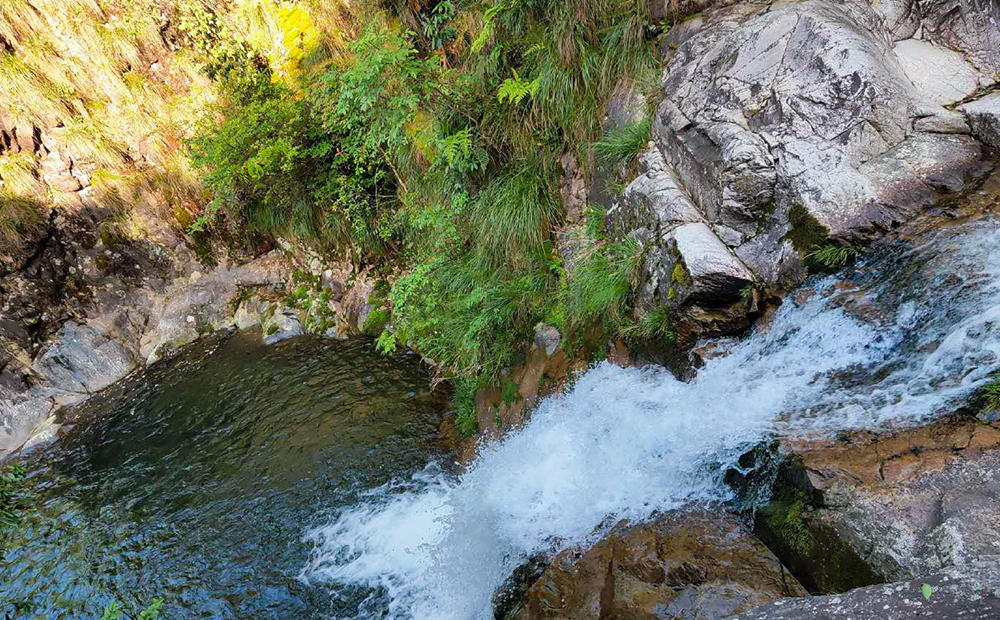

·徽州大峡谷介绍
徽州大峡谷原名源芳大峡谷，景区内悬崖峭壁蜿蜒曲折，群山连绵、飞瀑流泉，景色宜人。
徽州大峡谷景区划分为徽州峡谷漂流、源芳翠谷、仰山寺三大游览区
1. 源芳翠谷
源芳翠谷以峡谷风光见长，长约三里。谷里清溪奔流、碧潭、翠池、银瀑交相辉映，仿佛是一幅天然的水彩画。林中夹生的叶竹和形态各异的奇松怪石，以及乐于栖息于此的珍稀动物使得谷中的任何一景，都有如一幅优美而出色的图画一般，让人在峡谷走如在画中游。在这里游客还能观飞瀑、闯深潭、走栈道、登山石，体验大自然带来的无穷魅力。
2. 徽州峡谷漂流
徽州峡谷漂流的特点可以用“险、绿、幽、趣”四个字来概括。漂流河道位于蜈蚣坑和上渔塘村之间，全程3.5公里，总体落差100多米。河道两旁险峰绝壁、柳树成荫，河道中怪石嶙峋、激流不断，特别是有多处河道狭窄、水流很急落差在5-8米的地方，需漂流游客紧抓橡皮艇拉手，飞驰前进。在“之”字形的河道中迂回曲折，九曲十八弯，一波未停，一波又起，惊喜不断。乘上橡皮筏在这最清澈纯净的河水中激流勇进，让游客真正的体验到徽州峡谷漂流带来的惊险、刺激。
3. 仰山寺
仰山寺位于休宁源芳大峡谷源头，原坐落在璜尖乡境内，解放前归歙县管辖，解放后山林权划分时划归源芳乡管辖，仰山寺所在的仰山海拔在1000余米，有一块100多亩的平地，在这个高山之上，实属罕见，四周的山坳里，盛出一股股山泉，全部汇集仰山水口，而且常年保持一定的流量，仰山寺遗址的对面有一块常年不干的湿地，南方少见的芦苇在仰山就能见到。仰山的天然红花油茶，是黄山市罕见的稀有品种，全市仅休宁县的岭南和源芳乡的仰山才有，每年的春季整树的绽放，红艳艳的十分好看。
- 